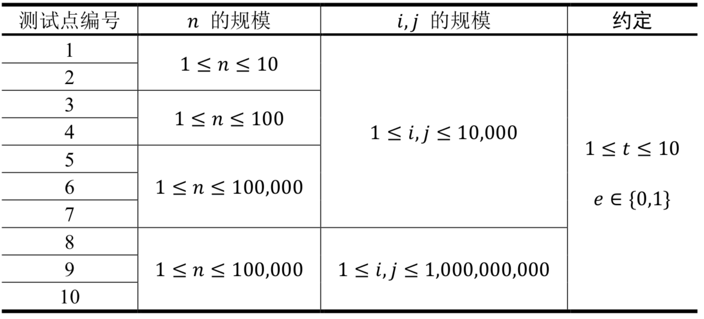

在实现程序自动分析的过程中，常常需要判定一些约束条件是否能被同时满足。
考虑一个约束满足问题的简化版本：假设$𝑥_1, 𝑥_2, 𝑥_3, ⋯$代表程序中出现的变量，给定$𝑛$个形如$𝑥_𝑖= 𝑥_𝑗$或$𝑥_𝑖 \ne𝑥_𝑗$的变量相等/不等的约束条件，请判定是否可以分别为每一个变量赋予恰当的值，使得上述所有约束条件同时被满足。例如，一个问题中的约束条件为：$𝑥_1= 𝑥_2, 𝑥_2= 𝑥_3, 𝑥_3= 𝑥_4, 𝑥_1 \ne𝑥_4$，这些约束条件显然是不可能同时被满足的，因此这个问题应判定为不可被满足。
现在给出一些约束满足问题，请分别对它们进行判定。
第1行包含1个正整数$𝑡$，表示需要判定的问题个数。注意这些问题之间是相互独立的。
对于每个问题，包含若干行：第1行包含1个正整数$𝑛$，表示该问题中需要被满足的约束条件个数。接下来$𝑛$行，每行包括3个整数$𝑖, 𝑗, 𝑒$，描述1个相等/不等的约束条件，相邻整数之间用单个空格隔开。若$𝑒 = 1$，则该约束条件为$𝑥_𝑖= 𝑥_𝑗$；若$𝑒 = 0$，则该约束条件为$𝑥_𝑖 \ne𝑥_𝑗$。
包括 $𝑡$行。
输出文件的第$𝑘$行输出一个字符串“YES”或者“NO”（不包含引号，字母全部大写），“YES”表示输入中的第$𝑘$个问题判定为可以被满足，“NO”表示不可被满足。
2 2 1 2 1 1 2 0 2 1 2 1 2 1 1
NO YES
2 3 1 2 1 2 3 1 3 1 1 4 1 2 1 2 3 1 3 4 1 1 4 0
YES NO
【样例说明1】
在第一个问题中，约束条件为：$𝑥_1= 𝑥_2, 𝑥_1 \ne 𝑥_2$。这两个约束条件互相矛盾，因此不可被同时满足。
在第二个问题中，约束条件为：$𝑥_1= 𝑥_2, 𝑥_2= 𝑥_1$。这两个约束条件是等价的，可以被同时满足。
【样例说明2】
在第一个问题中，约束条件有三个：$𝑥_1= 𝑥_2,𝑥_2= 𝑥_3,𝑥_3= 𝑥_1$。只需赋值使得$𝑥_1= 𝑥_2= 𝑥_3$，即可同时满足所有的约束条件。
在第二个问题中，约束条件有四个：$𝑥_1= 𝑥_2, 𝑥_2= 𝑥_3, 𝑥_3= 𝑥_4, 𝑥_1 \ne 𝑥_4$。由前三个约束条件可以推出$𝑥_1= 𝑥_2= 𝑥_3= 𝑥_4$，然而最后一个约束条件却要求$𝑥_1 \ne x_4$，因此不可被满足。
【数据规模与约定】
所有测试数据的范围和特点如下表所示

 Comet OJ
Comet OJ